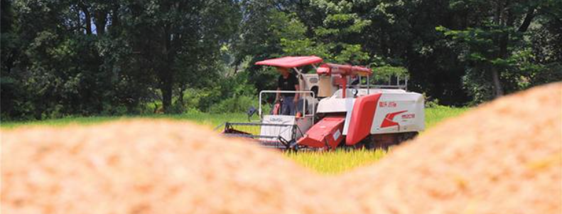
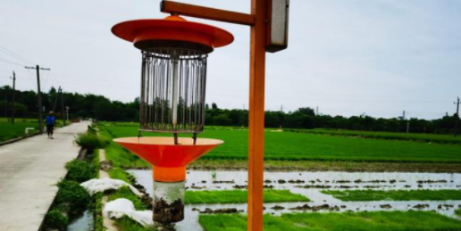

Editor: Chen Shiwen editor in charge: Liu Liang
On August 30, Zhang Lu, an agricultural technology and plant protection personnel of Fengcheng City, Jiangxi Province, found that there were a large number of local rice pests when checking the data of intelligent monitoring equipment in Makou village, Rongtang town. Zhang Lu timely informed the Grain Growers in the village to pay close attention to the pests and diseases and take control measures as soon as possible.
At present, it is at an important stage of autumn grain growth“ Now we should minimize the risk of diseases and insect pests, reduce the losses caused by diseases and insect pests, and ensure the yield and harvest of late rice! " Zhang Lu said. 
In order to strengthen the monitoring and early warning of diseases and pests, Fengcheng City has established a number of intelligent field monitoring points for diseases and pests in villages and towns. The intelligent monitoring system automatically monitors the change information of field insects all day long when unattended, and the forecasting personnel can remotely analyze the insect situation on their mobile phones.
Jiangxi is one of the important major grain producing areas in China and a province prone to natural disasters. At present, the temperature in the whole province is slightly high, and the risk of sudden turn of drought and flood in the later stage still exists.
Disaster prevention means increasing production, and loss reduction means increasing income. In order to stabilize autumn grain production, Jiangxi makes full use of scientific and technological means, timely monitoring and early warning, and strives to complete the annual grain production objectives and tasks.
In Fenglin Village, Dianxia Town, Zhangshu City, Jiangxi Province, the reporter saw that a large number of solar insecticidal lamps were installed in the rice field, which had an obvious effect on the control of major rice diseases and pests. A solar lamp kills more than 500 insects a day“ These devices use the phototaxis of insects to trap and kill, which greatly reduces the occurrence of diseases and pests in rice fields. " Zhangshu agricultural and rural bureau plant protection station master Liu Qinghua said. 
At present, Jiangxi has formulated the current plan for agricultural disaster prevention and reduction to ensure a bumper harvest. The meteorological and water conservancy departments respectively make prediction and early warning for weather changes and possible drought, and send early warning and forecast, disaster prevention and relief measures and other information through SMS platform and wechat platform. All parts of Jiangxi also organized technical experts, established technical service teams, went deep into the front line of autumn grain production, and accurately guided farmers to do a good job in field management by means of itinerant technical guidance services, squatting and film packaging, docking with large planting households, so as to ensure that the technology of stable yield and increase production can be delivered to households and fields.
The harvest of the whole year depends on the autumn grain. In the near future, Jiangxi will timely release 31 million yuan of agricultural production disaster relief funds from the central government, vigorously carry out unified prevention and control and emergency prevention and control, minimize the losses caused by diseases and pests, and realize "food grabbing by insects"（ Reporter Chen Chunyuan)